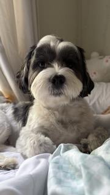

RESUME - OZZY LANCASTER

CONTACT
Ozzy Lancaster
Black & White Maltese | Toy Destroyer | Chicken Enthusiast
McLean, VA | bark@ozzywoofs.com | IG @OzzyTheMaltese
OBJECTIVE
To secure a full-time position as a spoiled household companion where I can apply my advanced skills in stuffed animal demolition, nap-taking, and strategic chicken begging.
EDUCATION
Major: Obedience & Cuteness Studies
- Courses: Sit & Stay, Barkonomics, Advanced Whining, Looking Adorably Guilty
- Honors: "Best Fluffy Ears" Award
EXPERIENCE
Puppy Ambassador | November 2023 - Present
- Rigorous taste-testing of treats and toys for quality assurance
- Providing tail-wagging testimonials across the living room
- Unboxing of Chewy deliveries (with minimal packaging casualties)
Chief Stuffed Toy Terminator
Living Room Operations Unit | Jan 2021 - October 2023
- Executed over 37 successful missions to remove squeakers from enemy plush toys
- Pioneered "rip the seam" technique for maximum destruction efficiency
- Conducted nightly reconnaissance under the couch for new toy targets
Freelance Lap Warmer
All Available Laps | Ongoing
- Provided heat and companionship during TV binges and work-from-home hours
- Expert at curling into the smallest possible space while maximizing comfort
SKILLS
- Toy Destruction (Expert)
- Chicken Sniffing & Selective Eating
- Nap Anywhere, Anytime
- Sit, Stay, Paw (When Bribed)
- Puppy Eyes (Advanced)
- Chase Without Retrieval
FAVORITE TREATS
- Chicken (do NOT try to sneak in beef - I will know)
- Occasionally accepts cheese bribes
- Will sniff other treats politely, then walk away insulted
REFERENCES
Available upon bark.